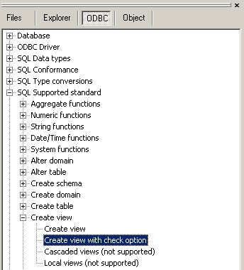

Use this command to define a view, a logical table based on one or more tables or views.
|
Syntax of the SQL statement |
|
CREATE VIEW [schema-name.]view-name [ ( column [,....] ) ] AS subquery [WITH [{CASCADED | LOCAL}] CHECK OPTION] |
If the form where named columns are used, there must be as much columns as in the result set (derived-table) of the subquery.
Not all database vendors support the 'WITH CHECK OPTION' clause.
To see if a particular syntax is supported consult the ODBC tree for the following items:
- The SQL conformance level
- The ODBC conformance level
- 'Create table options' under 'SQL support'. This info is rather unreliable for most database vendors.

See also: DROP VIEW